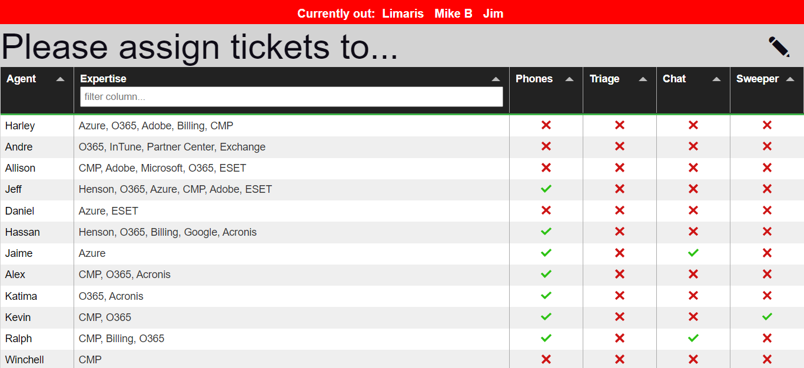

Triage Helper
Triage Helper is a tool to assist with sorting and assigning support tickets in high-volume help desk environments. It determines who is available to work tickets, lists each agent's expertise, links available agents' names to their current tickets, and highlights agents that are out of the office.
Features
This tool currently supports:
- List available agents and assigned duties
- Automatically replace agents for duties when they are out
- Filter agents by expertise
- Highlight agents who are on planned leave or out unexpectedly
- Time off integrated with SharePoint calendar
- Compatible with Microsoft Teams
Screenshot

Usage
Mark an agent as out
Navigate to the schedule either from the web app or locally. Place a # right before the name of the agent and save the file:
#Tom,1,1,1,1,1,0,0,6,0,agent%3A,"Billing","11/3,"
The agent will be listed as out for the rest of the day. The setting will be automatically reset daily (or however often you have it configured) by scheduler.php.
Add an agent
To add a brand new agent, create a new line in the schedule.csv file and insert their data into the respective columns:
name,mon,tues,wed,thurs,fri,sat,sun,time,time (weekend),agentID,expertise,time off
Tom,1,1,1,1,1,0,0,6,0,agent%3A,"Billing","11/3,"
...
New Agent, ...
name- This can contain spaces, but must be written the same in theduties.csvfile and in any SharePoint calendar events.- days of the week - Use 1 for days the agent is on shift and 0 for days off.
time- The start hour (in 24-hour time) of the agent's weekday shifts. Decimals can be set, but the script will only calculate the time to the nearest half-hour.time (weekend)- Same as above, but strictly for weekend days.agentID- The ID number for an agent, which is required when linking an agent's name to your ticketing system. The URL to the ticketing system should be configured insettings.iniif you are using this option.expertise- A comma-separated list of topics of expertise. Be sure to include the items in-between double quotes.time off- Dates in MM/DD format for when the agent will be off. This can be manually updated, but is mainly used in conjunction with a SharePoint calendar.
Remove an agent
To remove an agent, simply delete their entire row from schedule.csv. You should also remove mentions of their name from duties.csv, although it will not harm anything if the name stays there until there is a replacement.
TIP: If you want the script to automatically select other agents to fill in for the removed agent's duties (a different agent for every shift), leave the removed agent's name on a row by itself in schedule.csv with a # before it:
#Former Agent,
Any assigned duties listed for this name in duties.csv will then be automatically replaced at the start of the shift.
Add/remove a duty
It is easy to add, remove, or modify duties from settings.ini. Simply change the default names or add new jobs there:
[jobs]
1 = "phones"
...
5 = "new job"
Ensure that the numbers on the left-hand side always count sequentially (1, 2, 3, etc). To remove a job, delete the respective line from this file and then remove all entries for it in duties.csv. The job number listed here will correspond to the number in the third colum of the duties file.
Configuration
Most of the configuration options in settings.ini are self-explanatory. Here is some additional information on some of the parameters:
admin_pass- This password grants the same access as the regularpassthat is set, but with additional access to thesettings.inifile from the web app.shift_length- The number of hours agents will be listed as available from their start time on any given day.duration- This table of parameters maps directly to thejobssection, based on the number on the left-hand side. The duration is the number of hours that the agent will be assigned to that job for. Start times and days are set induties.csv.recipient- This person or mailing list will receive notifications about when an agent is substituted for a duty. It is not used for anything else.
Topology
All data concerning agents' schedules and expertise are stored in schedule.csv. The main script, index.php, reads this CSV file and determines if an agent is either on shift now or is within 2 hours of coming on shift.
It also checks to see if they are off by searching for a # in front of their name. The # can either be added manually or will be automatically added by scheduler.php if the agent has pre-planned time off.
The following additional scripts help with scheduling:
scheduler.php- Resets which agents are off for the day by removing all#before their names. It then checks which agents are off today and places the#before their name so thatindex.phpinterprets them as out for the day.parser.php- Scans a mailbox for alerts from a SharePoint calendar. Parses the email to determine which agent it is for and the dates they have requested off. It then adds or removes these dates (depending on the request) toagents.db. This script currently only supports events that are added or deleted to the calendar, not changed.
Roadmap
To be added in the future:
- Integrate with Freshdesk API (list open tickets, CSAT, etc.)
- Better database management